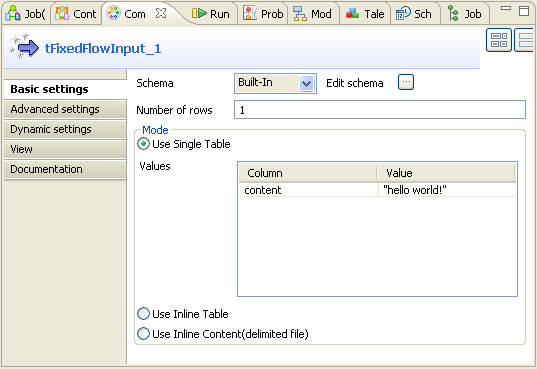
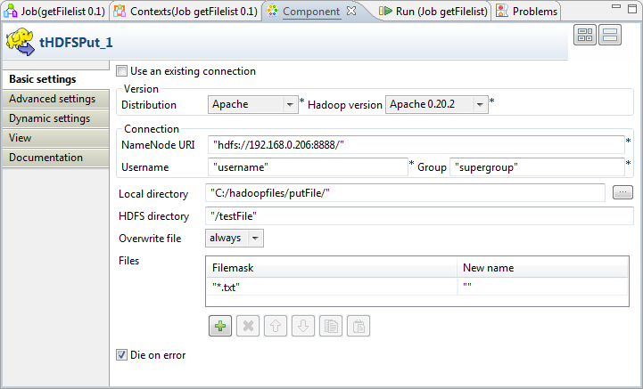
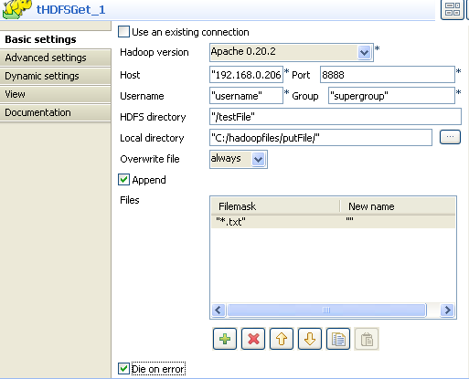

![[Avertissement]](../images/warning.png) | |
Ce composant est disponible dans la Palette de votre studio si vous avez souscrit à l'édition correspondante de Talend Enterprise Data Integration Big Data edition. |
|
Famille de composant |
Big Data/Hadoop | ||||
|
Fonction |
tHDFSGet extrait des données du système de fichiers Hadoop. | ||||
|
Objectif |
tHDFSGet se connecte au système de fichiers distribués Hadoop, permet d’obtenir de gros fichiers avec une performance optimisée. | ||||
|
Basic settings |
Use an existing connection |
Cochez cette case et sélectionnez le composant adéquat à partir de la liste Component List pour réutiliser les paramètres d’une connexion que vous avez déjà définis.
Sinon, vous pouvez également désactiver le composant de connexion et utiliser les Dynamic settings du composant, afin de paramétrer manuellement la connexion. Dans ce cas, vérifiez que le nom de la connexion est unique et distinct tout au long des deux niveaux de Jobs. Pour plus d’informations concernant les paramètres dynamiques (Dynamic settings), consultez le Guide utilisateur de votre Studio. | |||
| Hadoop version |
Sélectionnez dans la liste déroulante la version de la distribution d'Hadoop que vous utilisez. | ||||
| Host | Adresse IP du serveur du système de fichiers distribués Hadoop. | ||||
|
|
Port |
Numéro du port d’écoute du serveur de HDFS. | |||
|
|
User name |
Identifiant de l’utilisateur de HDFS. | |||
|
|
Group |
Identifiant de l’utilisateur et nom du groupe sous lesquels les instances HDFS ont été lancées. Ce champ peut être disponible ou indisponible selon la distribution que vous utilisez. | |||
|
|
HDFS directory |
Emplacement des fichiers sources dans HDFS. | |||
|
|
Local directory |
Dossier local où sont stockés les fichiers obtenus via HDFS. | |||
|
|
Overwrite file |
Option permettant d’écraser ou non les fichiers avec le nouveau fichier. | |||
|
|
Append |
Cochez cette option pour ajouter des nouvelles lignes à la fin du fichier. | |||
|
|
Files |
Dans la zone Files, les champs à remplir sont : - File mask : saisissez le nom du fichier qui sera sélectionné dans HDFS. Vous pouvez utiliser des expressions régulières. - New name: renommez le fichier obtenu. | |||
|
|
Die on error |
La case est cochée par défaut. Décochez la case afin d’ignorer la ligne d’erreur et finir le processus de lignes sans erreur. | |||
|
|
tStatCatcher Statistics |
Cochez cette case pour collecter les données de log au niveau du composant. | |||
|
Usage |
Ce composant combine la connexion HDFS et l’extraction de données, ainsi il est utilisé comme un simple composant sous-job ou pour préparer les données afin d’alimenter le flux d’entrée d’un Job. Il est souvent connecté au Job utilisant les liens OnSubjobOk ou OnComponentOk, en fonction du contexte. | ||||
|
Limitations |
tHDFSGet et tHDFSPut doivent être exécutés à partir de la version 1.6+ de JRE. | ||||
![[Note]](../images/note.png)
Le scénario suivant décrit un simple Job qui crée un fichier dans un dossier défini, dans ou en dehors d’HDFS, l’enregistre dans un autre dossier local et le lit à la fin de l’exécution du Job.
Glissez les composants suivants de la Palette vers l’espace de modélisation : tFixedFlowInput, tFileOutputDelimited, tHDFSPut, tHDFSGet, tFileInputDelimited et tLogRow.
Connectez le tFixedFlowInput au tFileOutputDelimited à l'aide d'un lien Row > Main.
De la même façon, cliquez-droit sur le composant tFileInputDelimited pour le relier au tLogRow, en utilisant le lien Row Main.
A nouveau, cliquez-droit sur le composant tFixedFlowInput pour le relier au composant tHDFSPut en utilisant le lien OnSubjobOk.
Reliez le tHDFSPut au tHDFSGet à l'aide d'un lien OnSubjobOk.
Reliez le composant tHDFSGet au tFileInputDelimited à l’aide d’un lien OnSubjobOk.

Dans l’espace de modélisation, double-cliquez sur le composant tFixedFlowInput pour définir ses Basic settings.
Dans la liste Schema, sélectionnez Built-In et cliquez sur le bouton [...] situé à côté d’Edit Schema afin d’afficher la structure des données que vous souhaitez créer à partir des variables internes. Dans ce scénario, le schéma contient une colonne : content.

Cliquez sur le bouton [+] pour ajouter une ligne de paramètres.
Cliquez sur OK pour fermer la boîte de dialogue et accepter la propagation des modifications.
Dans l’onglet Basic settings, dans la zone Mode, définissez la valeur de la colonne, en utilisant l’option Use Single Table. Dans ce scénario, la valeur est “Hello world!”.

Dans l’espace de modélisation, sélectionnez le composant tFileOutputDelimited et cliquez sur l’onglet Component afin de définir sa configuration de base (Basic settings).

Cliquez sur le bouton [...] situé à côté du champ File Name et parcourez votre répertoire jusqu’au fichier de sortie dans lequel vous souhaitez écrire des données, in.txt dans cet exemple.
Dans l’espace de modélisation, sélectionnez le composant tHDFSPut et cliquez sur l’onglet Component pour définir ses Basic settings.
Sélectionnez Apache 0.20.2 dans la liste Hadoop version.
Dans les champs Host, Port, Username et Group, saisissez les informations de connexion à HDFS.
A côté du champ Local directory, cliquez sur le bouton [...] afin de parcourir votre répertoire et sélectionner le fichier à charger dans HDFS. Dans ce scénario, le dossier a été spécifié pendant la configuration du composant tFileOutputDelimited : C:/hadoopfiles/putFile/.
Dans le champ HDFS directory, saisissez l’emplacement défini dans HDFS pour enregistrer le fichier à charger. Dans cet exemple, il s’agit de /testFile.
Cliquez sur le champ Overwrite file pour développer le menu déroulant.
Dans le menu, sélectionnez always (toujours).
Dans la zone Files, cliquez sur le bouton [+] pour ajouter une ligne dans laquelle vous définissez le fichier à charger.
Dans la colonne File mask, saisissez *.txt entre guillemets pour remplacer newLine, et laissez la colonne New name telle quelle. Ceci vous permet d’extraire tous les fichiers .txt dans le dossier spécifié sans modifier leur nom. Dans cet exemple, le fichier est in.txt.
Dans l’espace de modélisation, sélectionnez le composant tHDFSGet et cliquez sur l’onglet Component pour définir sa configuration de base.
Sélectionnez Apache 0.20.2 dans la liste Hadoop version.
Dans les champs Host, Port, Username et Group, saisissez les paramètres de connexion à HDFS.
Dans le champ HDFS directory, saisissez l'emplacement de stockage du fichier chargé dans HDFS. Dans cet exemple, il s’agit de /testFile.
A côté du champ Local directory, cliquez sur le bouton [...] pour parcourir jusqu’au dossier spécifié pour l’enregistrement des fichiers extraits d’HDFS. Dans ce scénario, le dossier est : C:/hadoopfiles/getFile/.
Cliquez sur le champ Overwrite file pour développer le menu déroulant.
Dans le menu, sélectionnez always (toujours).
Dans la zone Files, cliquez sur le bouton [+] pour ajouter une ligne dans laquelle vous définissez le fichier à extraire.
Dans la colonne File mask, saisissez *.txt entre guillemets pour remplacer newLine et laissez la colonne New name telle quelle. Ceci vous permet d’extraire tous les fichiers .txt du dossier spécifié dans HDFS sans en modifier les noms. Dans cet exemple, le fichier est in.txt.
Dans l’espace de modélisation, sélectionnez le composant tFileInputDelimited. Cliquez sur l’onglet Component pour définir ses Basic settings.

Dans la liste Property Type, sélectionnez le type Built In.
A côté du champ File Name/Stream, cliquez sur le bouton [...] pour parcourir votre répertoire jusqu’au fichier obtenu de HDFS. Dans ce scénario, le fichier est C:/hadoopfiles/getFile/in.txt.
Dans la liste Schema, sélectionnez Built-In et cliquez sur Edit schema pour définir les données à passer au composant tLogRow.

Cliquez sur le bouton [+] pour ajouter une nouvelle colonne.
Cliquez sur OK pour fermer la boîte de dialogue et accepter la propagation des modifications.